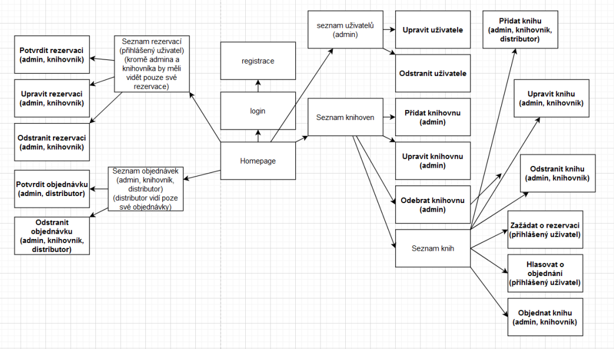
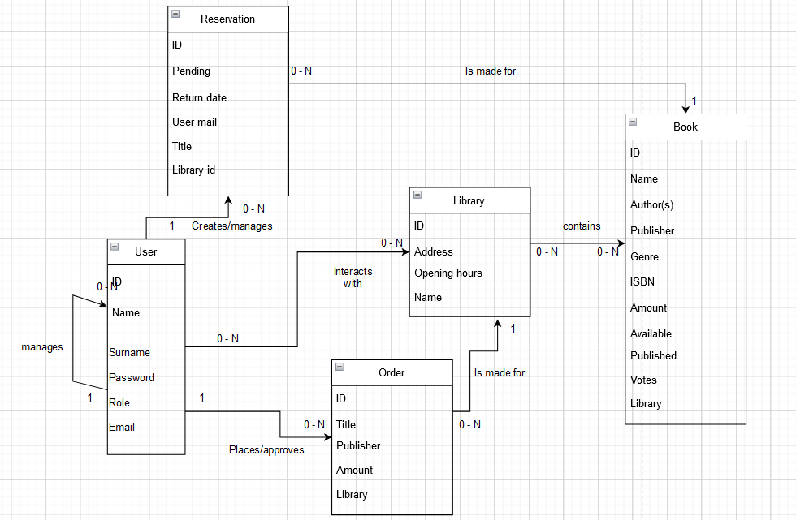

2. Knihovna: vyhledávání, rezervace, půjčování a objednávání knih
- Autoři
- Jakub Novotný
xnovot2a@vutbr.cz -
Tvorba hostujícího serveru, konfigurace serveru, práva, zabezpečení, tvorba ER, front-end, PHP registrace, PHP přihlášení, změny uživatele, seznam objednávek, dokumentace
- Konečný Martin
xkonec79@vutbr.cz -
Tvorba Use Case, ER diagram, účet Azure-hosting, back-end, naplnění databaze, formuláře s php přídáváním funkcí, SQL dotazy ,změny uživatele, dokumentace, správa gitu
- Čellár Peter
xcella01@vutbr.cz -
Tvorba ER diagram, back-end, formuláře, naplnění databaze, tvorba databáze, vytvoření databaze, správa dat DB, formuláře s php přídáváním funkcí
- URL aplikace
- Jméno: root
- Heslo: FT58S7hH55Vbnkv
- http://iis.sytes.net/
- http://20.113.69.34/
Uživatelé systému pro testování
| Login | Heslo | Role |
|---|
| admin@admin.cz | admin | admin |
| knihovnik@knihovnik.cz | knihovnik | knihovník |
| distributor@distributor.cz | distributor | distributor |
| ctenar@ctenar.cz | ctenar | čtenář |
| Neregistrovaný uživatel | Nucené dokončit registraci | Nucené dokončit registraci |

Implementace
Registrace je pod kartou příhlásit se. Každá role kromě admin/knihovník/distributor je implicitně považovaná za čtenáře. Projekt je implementován, že v index.php se nachází HTML a PHP dohromady.
Náslendě, zde nalezneme front-end, který je nastylován pomocí CSS nacházející se v css/style.css.
Obrázky jako pozadí je náčítáno z img/bg.png. Je v něm obsažena registrace, možnost příhlášení, práva a základní zobrazení tabulek knihovny s příslušnými akcemi.
Následně nalezneme podadresáři /source/ jednotlivé akce co se stanou po zmáčknutí tlačíka, které jsou volány přes formulář, jako například přidat rezervaci, přidat knihu, přidat knihovnu.
Databáze

Instalace
Popis:
- Složku s projektem vezmem a překopírujeme do /var/www/ následně do ní přídáme framework NETTE (web-project-prealoded.zip, NETTE: Web Project for Nette 3.1 requires PHP 7.2) a to pouze složku vendor
- Importujeme přiloženou databazy Library.sql do MYSQL. V našem případě se připojujem k DB pomocí PDO a to za údajů: localhost, root, FT58S7hH55Vbnkv
- V kořenovém adresáři máme Library.sql, následně pomocí příkazu: mysql -u root -p < Library.sql danou databázi vytvoříme.
- PHP verze: 7.4.3
- MYSQL: 8.0.27-0ubuntu0.20.04.1 for Linux on x86_64 ((Ubuntu))
- HTML: HTML5
- NETTE: Web Project for Nette 3.1 requires PHP 7.2
- SYSTEM: Ubuntu 20.04.3 LTS (GNU/Linux 5.11.0-1021-azure x86_64)
Známé problémy
Žádné neobjeveny